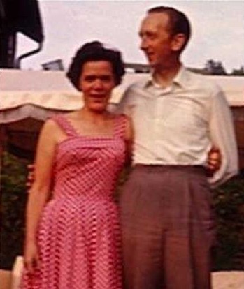

Bertil Emil Jansson Jägeberg.

Född 2 maj 1917 i Karlshov, Enebymo, Norrköping, Norrköpings Östra Eneby (E) 16 .
Död 22 mar 1982 i Mölndalsbacken 66, Gård 8, Kv Läskpapperet, Stureby, Enskede, Stockholm, Vantör (AB) 2 .
|
Född
28 okt 1922
i Rösta, Sollefteå (Y)
1
.
Död 11 jun 2009 på Sandfjärdsgatan 33, Gård 3, Kv Björklången, Årsta, Stockholm, Enskede-Årsta (AB) 2 . |
 |
|
Lillian Ingeborg Jägeberg f Näsholm
Född 28 okt 1922 i Rösta, Sollefteå (Y) 1 . Död 11 jun 2009 på Sandfjärdsgatan 33, Gård 3, Kv Björklången, Årsta, Stockholm, Enskede-Årsta (AB) 2 . |
|||
|
Gift
7 sep 1946
Bertil Emil Jansson Jägeberg.
Född 2 maj 1917 i Karlshov, Enebymo, Norrköping, Norrköpings Östra Eneby (E) 16 . Död 22 mar 1982 i Mölndalsbacken 66, Gård 8, Kv Läskpapperet, Stureby, Enskede, Stockholm, Vantör (AB) 2 . |
Framställd 6 nov 2026 med hjälp av Disgen version 2025.
 Född
6 jun 1948
i Brännkyrka (AB)
Född
6 jun 1948
i Brännkyrka (AB)